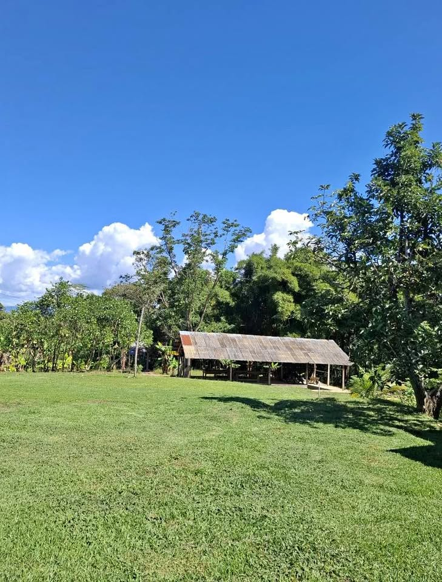

PEN2,000,000 7 ha

📍 Centro Poblado Comunidad Kechwa Wayku – Lamas Precio: $500 0000 🌿 Área total: 7 hectáreas + 8,000 m Ideal paa disfrutar de la naturaleza, vivir en tranquilidad o desarrollar un proyecto turístico o agroforestal. 🔸 CASA PRINCIPAL 🛏️ 2 habitaciones con baño completo 🖥️ 1 Oficina, Estudio y/o habitación adicional 🛁 1 baño completo adicional 🛋️ Sala amplia 🍽️ Comedor 🍳 Cocina amplia con muebles bajos 🧺 Lavandería Cobertizo al frontis de la casa Ideal para cochera o terraza frontal: Techo de calamina para lluvia y sol 🧱 Almacén con 4 Ambientes funcionales: Ideal para depósito, comerci